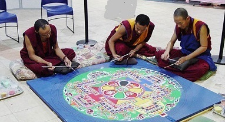
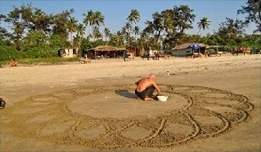
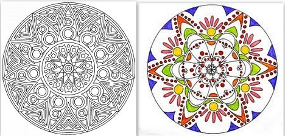
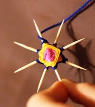

Плетение мандалы — увлекательное занятие
Как сделать мандалу своими руками? В этой статье автор поделится опытом плетения самой первой мандалы.
Кстати, немного информации о том, что значит «мандала».
Мандала – символ в сложном геометрическом изображении. Мандалу можно сделать из песка, дерева или металла, ее можно нарисовать или сделать в виде вышивки, сложить из камня или сплести из разноцветных ниток. Изображают ее на полу, стенах, нарисованные мандалы, как картины заключают в рамки, а в храмах расписывают ими своды.
Мандала (ударение – на первый слог)включает в себя формы: большой круг- это Вселенная, квадрат – стороны света, малый круг – измерения Божества, треугольники- символизируют лепестки лотоса.
Для чего нужна Мандала?
- Во- первых, она может стать вашим оберегом, «успокоительным», магическим и вдохновляющим средством.
- Мандала служит символом для медитации. Мандала почитаема не только на Востоке, но и во всем мире. Этот священный атрибут для поклонения в индуистской и буддистской религиозной практике делают под особенным ритуалом.
- Ее часто используют в качестве психотерапевтического средства для осознания собственного предназначения, и понимания самого себя.
Это очень краткое и обобщенное описание значения мандалы.
Найдите в интернете «разукрашки», распечатайте и творите! Или придумайте что-то свое.
Приступаем к работе.
Что нужно для плетения мандалы?
- Хорошее настроение, позитивные мысли.
- Четыре палочки. Это может быть что угодно: карандаши, палочки от суши, даже зубочистки для самой маленькой мандалы, использованные стержни из авторучки (если стержень очень гибкий, во внутрь его можно засунуть зубочистки или спички). Либо пойти и отрезать несколько веточек. Так и было решено- попросить у дерева веточки на благое дело. Веточки оказались разными по толщине, и не очень прямые. Все это легко исправляется ножичком. Для того, чтобы палочки стали ровнее, их стянули по всей длине жестким жгутом и оставили на ночь. К утру они выпрямились.
- Разноцветные нитки.
Здесь нужно учесть один нюанс. Нитки для мандалы лучше всего брать натуральные.
- Натуральная шерсть – прочная, слегка колючая. Смотрится очень хорошо.
- Хлопок, лен – жесткая нить и очень прочная. Красиво будет смотреться на маленькой мандале.
- Хлопок + вискоза. Очень прочная и блестящая нить. Как правило, нить тонкая.
- Акрил может быть разной толщины и текстуры. В основном – ворсистый. Не очень прочная нить. Лучше не использовать. Но учиться делать первую мандалу вполне годится.
- Не используйте синтетические нити на подобии капрона. Такие нитки хорошо тянутся, и потом могут провиснуть, а этого допускать нельзя.
Из опыта плетения первой мандалы сделаны выводы:
- Надо правильно подобрать нить в соответствии с толщиной палочек.
- Пересмотреть видео по плетению мандалы несколько раз!
- Следить за тем, как ложится нить с обратной стороны.
- Соизмерять силу натяжения нити. Иначе можно её порвать или сломать лучик.
В общем, с хорошим настроением и мыслью, что мандала будет сплетена хотя бы за час, автор статьи приступает к работе.
Мечта о быстром свершении чуда разбилась о неуклюжесть рук.
** Первое действие было сделано ловко и быстро: соединить две палочки, обмотать по серединке и сделать крестовину, сплести в центре креста квадратик. И так — два раза, т.е. у нас получается две крестовины. Более подробно и наглядно о технике плетения мандалы вы увидите в видео, внизу статьи.
** Следующий этап – «розетка»: надо соединить две эти крестовины.
Вот здесь и началась борьба с их «непослушанием». :-) Десяти пальцев не хватало, чтобы удержать ровно две крестовины и оплести лучики узором «Звезда» — это когда оплетаете через две палочки – каждую третью. Мандала гуляла во все стороны, не желая закрепляться, а мастер-ломастер пыхтел и переживал, насколько он оказался неуклюж.
Кое-как победив этот этап плетения, было решено- распустить, так как все оказалось не очень ровным. А про обратную сторону было забыто напрочь – там нитки цеплялись друг за друга и лежали очень некрасиво, а должно было выглядеть в виде звезды.
Поскольку мандала вертелась во все стороны- её ещё можно было повернуть, но тогда нитки с одной стороны натянутся сильнее, а с другой – провиснут.
Мастер превзошел все свои ожидания, когда выравнивал расстояние между лучами, и сломал одну из палочек. :) Поскольку лучики оказались достаточно длинными, то эта ситуация оказалась не критичной.
** Третий этап – оплетение квадратами. Это уже намного легче. Здесь ниточкой оплетаем каждый второй лучик. Можно применить 2-3 разных цвета. Получается очень красиво
Четвёртый этап – пояс. Самое легкое в плетении.
Выбирая тот или иной цвет нити для плетения мандалы, их сочетание, творец может передать свое состояние души на момент свершения этого действия. По сути, мандала- это зашифрованный схематический узор, через который можно было бы передать будущим поколениям всю мудрость, знания, обычаи. Создание мандалы свойственно медитации. С каждым витком ниточки мастер приближается к душевному равновесию. Каким-то загадочным образом, не поддающимся логике, уходит тревога, улучшается настроение, находятся решения важных задач.При создании первой мандалы о «вплетении» аффирмаций не было и речи. Зато была решена жизненно важная задача на тот момент — отточить мастерство.
Когда плелась первая мандала, еще не понятна была общая картина узора. Главное было – научиться.
Вторую мандалу решено было сделать на зубочистках. Для этого были использованы тонкие хлопковые нитки. Эта маленькая мандала плелась уже намного легче.
Вот такие они получились, первые и самые запоминающиеся.

Когда их представили домочадцам, все удивились и признались потом, что созерцание на мандалу может быть бесконечным. Она словно гипнотизирует, отвлекает от негативных мыслей.
Возможно, первые мандалы не будут идеально ровными. Подберутся не те цвета. Но, в мире нет ничего совершенного. Поэтому, смело беритесь за палочки и нитки (какие есть) и приступайте к действию!Если вы любите рисовать, нарисуйте мандалу. Здесь вообще полёт фантазии не ограничен.
Чем еще полезно плетение мандалы.
- Это очень полезное занятие для развития моторики рук.
- Непоседы станут более усидчивыми.
- У детей сформируется эстетическое восприятие цветовых сочетаний.У детей сформируется эстетическое восприятие цветовых сочетаний.
- Это занятие очень хорошо помогает тренировать концентрацию внимания и запоминания
- Детям с неустойчивой, агрессивной психикой плетение мандалы поможет успокоиться.
А сейчас, для всех тех, кому стало интересно- как сотворить такую красоту, видео о плетении мандалы. Это очень хорошее пособие для начинающий. Смотрите, учитесь.